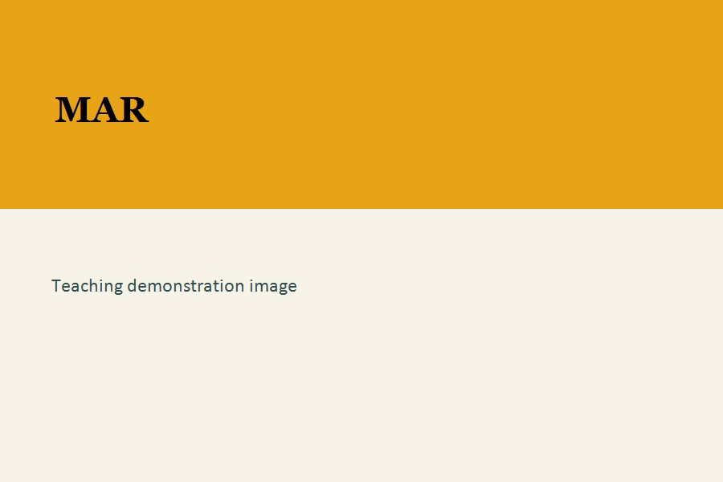
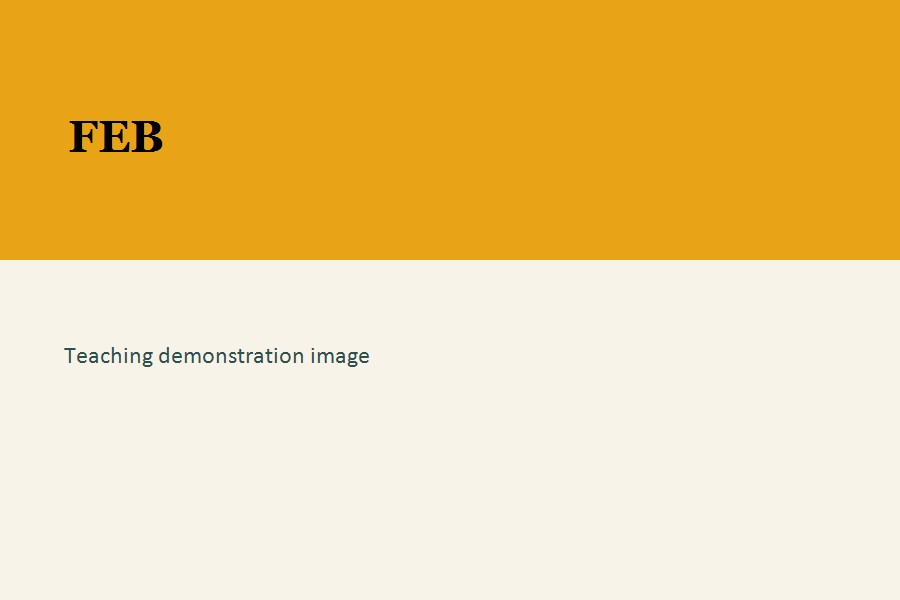
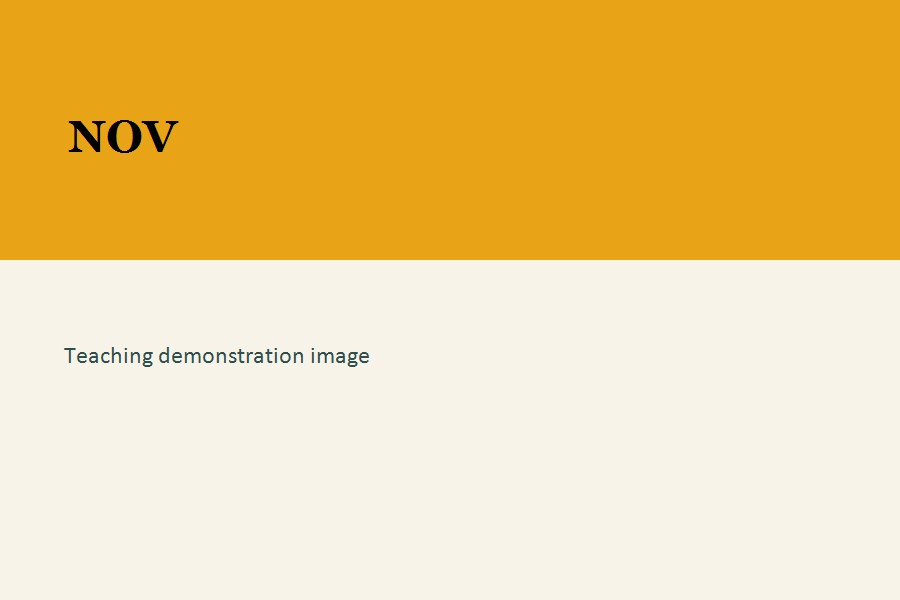

A fifteen-minute teaching demonstration for a first-year composition faculty search.
I begin with a familiar object and ask what we can learn by looking closely.
Sometimes the most useful place is not a new theory but a familiar image.
Students already know the poster. That gives us a shared entry point.
I ask students to name what they see before I ask them to explain what they know.
That move keeps the inquiry grounded in evidence rather than in assumption.

We capture the first impressions in the room.
“The poster is not a finished answer. It is a prompt for inquiry.”
Wierszewski, 2017
I sort the observations into what can be pursued and what needs more context.
Kimble and Olson (2006) show that the poster’s meaning changes when we place it in a historical and cultural frame.
That is the point of research: it moves from assumption to evidence.
Research is not only about finding information. It is also about noticing what we bring to the page.
The 1943 gallery is not a single conclusion. It is a sequence of questions, revisions, and new evidence.


Kimble, J. J., & Olson, J. S. (2006). The Rosie the Riveter image and its historical meanings.
Wierszewski, E. (2017). “The poster’s authority is not self-evident.” In Bad Ideas About Writing.